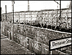

Efter anden verdenskrig
Da Anden Verdenskrig sluttede opdelte sejrherrerne Tyskland i fire besættelseszoner, som blev administreret af hver af magterne USA, England, Frankrig og Sovjet. På samme måde blev hovedstaden Berlin, der ellers befandt sig langt inde i sovjetbesættelseszonen, inddelt i fire områder, der blev forvaltet af de samme fire nationer. Anden Verdenskrig blev imidlertid afløst af den kolde krig med vestmagterne - bl.a. USA, England og Frankrig - på den ene side og østmagterne - bl.a. sovjet - på den anden. Dette resulterede i at et jerntæppe kom til at gennemskære Europa og i særdeleshed Tyskland. Dermed kom Vestberlin til at ligge som en ø i et ellers sovjetkontrolleret territorium.